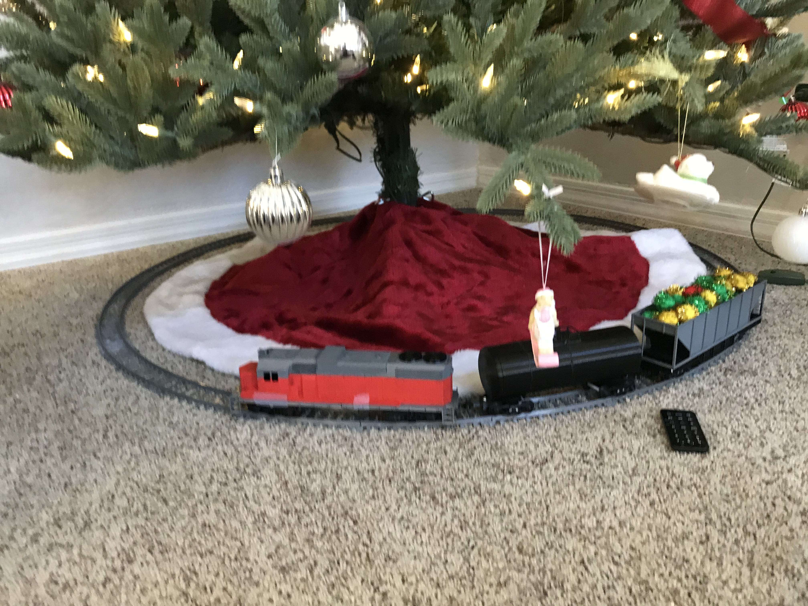

<!DOCTYPE html>
<html>
    
</html><!DOCTYPE html>
<html>
    <head>
        <title>Projects - Vehicles</title>
        <link rel="stylesheet" href="styles.css">
        <meta charset="utf-8">
        <meta name="viewport" content="width=device-width, initial-scale=1">
    </head>
    <body>
        <header>
            <h1>Project Portfolio</h1>
        </header>
        <nav>
            <a href="index.html" class="navItem">Gallery</a>
            <a href="ecosystems.html" class="navItem">Ecosystems</a>
            <a href="costumes.html" class="navItem">Costumes</a>
            <a href="vehicles.html" class="navItem currentPageNav">Vehicles</a>
            <a href="games.html" class="navItem">Games</a>
            <a href="otherProjects.html" class="navItem">Other Projects</a>
        </nav>
        <section id="vehicles-intro">
            <h2>Vehicle Projects</h2>
            <p>I enjoy building many things, but even more so when it's something that can move. That's why I've become quite interested in mini vehicles.</p>
        </section>
        <div class="spacer separator"></div>
        <section id="airplanes">
            <h3>RC Airplanes</h3>
            <figure>
                
                <figcaption>FT Explorer airplane</figcaption>
            </figure>
            <p>During the summer of 2021, I found out that it's possible to DIY a radio-controlled airplane out of cheap foam board, and I figured I'd try my hand. I spent a lot of time and a fair amount of money getting started and building my first airplane. Unfortunately, when I tried to take it off the ground, it didn't have enough lift, even at full speed. I was pretty bummed, and then the school year started, so I put away the project until later.</p>
            <div class="spacer"></div>
            <figure>
                
                <figcaption>Airplane design from <span><a href="https://joyplanes.com/en/homemade-rc-trainer-airplane/">JoyplanesRC</a></span></figcaption>
            </figure>
            <p>The next summer, 2022, I decided I wanted to try again. This time I made the above airplane, designed by JoyplanesRC. It was quite a bit bigger, and I tried some different electronics. This time, I was able to get it off the ground! I wasn't a very good pilot yet, so that plane didn't last very long and went through multiple rounds of fixing, but I kept trying new plane designs and practicing flying. I found <a href="https://www.flitetest.com/">FliteTest</a>, a popular RC airplane group with many free designs available, and I had a blast building and flying them. I 3D printed various landing gear and created a few add-ons, such as a drop bay on the bottom. Here are a few more videos and pictures.</p>
            <div class="spacer"></div>
            <figure>
                <div class="flex-container">
                    
                    <video controls muted class="images-horizontal flex-item">
                        <source src="vid/FTCubVid.MOV">
                    </video>
                    <video controls muted class="images-horizontal flex-item">
                        <source src="vid/FTExplorerVid.MOV">
                    </video>
                </div>
                <figcaption>FT Cub and Explorer designs</figcaption>
            </figure>
        </section>
        <div class="spacer separator"></div>
        <section id="trains">
            <h3>Trains</h3>
            <figure>
                
                <figcaption>EMD GP38/39 engine for train set</figcaption>
            </figure>
            <p>In 2020, I did a lot of 3D printing projects while under COVID quarantine. One of those was this train project. It is based on the <a href="https://www.thingiverse.com/groups/os-railway">OS Railway project</a> made by user Depronized on Thingiverse. I made a few different cars and spent most of my time on the engines. The suggested motor wasn't available very cheaply where I live, so I tried two different engine designs and various motor types and configurations. This really stretched my CAD skills and I learned a lot about Fusion360. My final working design was this big <a href="https://www.thingiverse.com/thing:4390600">EMD GP38-39-inspired locomotive</a>. I adapted the electronics to respond to an IR remote control. My favorite use for this project was around the Christmas tree.</p>
            <figure>
                
                <figcaption>Christmas Tree train set</figcaption>
            </figure>
        </section>
        <div class="spacer"></div>
    </body>
</html>